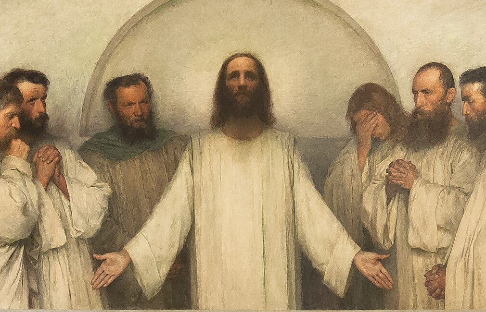

John 17
Jesus prays for his own
On the night before the cross, Jesus lifts his eyes to heaven and prays: for himself, for his disciples, and for everyone who would ever believe.
Things to watch for
Keep these questions in the back of your mind as we read. We'll come back to every one of them at the end.
- Eternal lifeWhat is eternal life?
- The finished workWhat work did Jesus finish?
- KeptCan anyone the Father gave to Jesus be lost?
- In the worldWhy doesn't Jesus ask the Father to take us out of the world?
- UnityWhy does Jesus pray that believers would be one?
- Prayed forDid Jesus pray for you?
Part one
The hour is come
Verses 1–5
Jesus prays for himself.
The prayer of the High Priest
This is the longest prayer of Jesus we have. He's in the upper room or on the way to the garden, hours from his arrest. He prays out loud so his men can hear it.
The prayer widens like ripples in a pond: first himself, then the eleven, then everyone who would ever believe.
That outer circle includes you. Hold that thought until verse 20.
“The hour is come”
Remember how John kept saying his hour hadn't come yet? Here's the whole track:
The cross is now hours away, and the first thing Jesus asks for is “glorify thy Son.” Not escape. Glory. He knew the cross would be the place where God's love and power would shine brightest.
And the goal of that glory is “that thy Son also may glorify thee.” Everything Jesus did pointed back to his Father.
What eternal life is
Ask most people what eternal life means and you'll hear things like these:
- Living foreverEven the lost will exist forever. That's not the gift.
- Getting into heaven somedayIt starts long before that.
- A reward for being good enoughIt's given (v. 2), not earned.
- Knowing God, and Jesus ChristA real relationship with God, starting the day you believe and never ending.
“Know” here isn't knowing about Him, the way you know facts about a president. It's knowing him the way you know your closest friend. And it begins now.
Finished
John 17:4, the night before
“I have finished the work which thou gavest me to do.”
John 19:30, on the cross
“When Jesus therefore had received the vinegar, he said, It is finished: and he bowed his head, and gave up the ghost.”
Jesus speaks of the cross as already done. The word he'll cry out there, tetelestai, means it is done, completed, paid. Nothing is left to add, by him or by you.
And verse 5 tells us who he really is. He's asking for the glory he had with the Father “before the world was”. Nobody but God could pray that. “In the beginning was the Word, and the Word was with God, and the Word was God” (John 1:1).
Part two
Keep them
Verses 6–19
Jesus prays for the men in the room.
Handed down
This prayer is full of giving. Count them:
So who are the ones the Father “gave” Him? Not a secret list. Jesus himself explained it:
“And this is the will of him that sent me, that every one which seeth the Son, and believeth on him, may have everlasting life: and I will raise him up at the last day.”
John 6:40
The given ones are the believing ones (v. 8: “they have believed”). Whosoever comes, he receives.
None of them is lost
Now Jesus asks the Father to go on keeping them “through thine own name”: by his power, not theirs.
“My Father, which gave them me, is greater than all; and no man is able to pluck them out of my Father’s hand.”
John 10:29
And Judas, “the son of perdition”? One of the twelve, but never a believer (6:64). He wasn't a saved man who got lost. He was a lost man who never came in.
In it, not of it
Jesus doesn't ask for a way out of the world. He sends us into it (v. 18). He asks the Father to keep us “from the evil,” from the evil one.
A ship belongs in the sea. The trouble starts when the sea gets into the ship.
You don't have to move to the moon to stay clean. You'll still work, live, and walk past the old places. What you need is to be kept, and Jesus asked the Father to do exactly that.
“And be not conformed to this world: but be ye transformed by the renewing of your mind, that ye may prove what is that good, and acceptable, and perfect, will of God.”
Romans 12:2
To sanctify is to set something apart for God's use, like a cup taken off the common shelf and kept for the King's table. And the tool God uses is his word.
That's why we open the Bible every day. It isn't homework. It's how God reshapes a man from the inside.
Set apart from the world, and sent back into it. That's every believer's calling.
Part three
That they all may be one
Verses 20–26
Jesus prays for everyone who would ever believe.
He prayed for you
Not by name, but by description: “them also which shall believe on me through their word.” Follow the word down through time:
On the night before he died, with all that was coming, Jesus took time to pray for a man who wouldn't be born for two thousand years. If you believe on him, he prayed for you.
One, so the world will believe
The model for this oneness is the Father and the Son: “as thou, Father, art in me, and I in thee.” It's not everyone dressing alike or agreeing on every small thing. It's a shared life in God.
And it has a purpose. Twice Jesus says why: “that the world may believe” (v. 21) and “that the world may know” (v. 23).
The world watches how believers treat each other.
A room full of men from every kind of background, carrying each other's burdens, praying for each other every day: that's an answer to this prayer.

Where he wants you
Of all the things Jesus could ask for his people, here's his last request: that we'd be with him. He wants your company. He said the same thing hours earlier:
“And if I go and prepare a place for you, I will come again, and receive you unto myself; that where I am, there ye may be also.”
John 14:3
And look how the prayer ends (v. 26): that the same love the Father has for the Son would be in them, and Jesus himself in them. That's where this whole prayer has been going.
He hasn't stopped praying, either. Right now, he “ever liveth to make intercession” for those who come to God by him (Hebrews 7:25).
Points to remember
- Eternal life“That they might know thee the only true God” 17:3Eternal life is knowing God through Jesus, and it starts now.
- The finished work“I have finished the work” 17:4He did everything needed to save us. Nothing is left to add.
- Kept“None of them is lost” 17:12Those who believe are kept by the Father's own power.
- In the world“Keep them from the evil” 17:15He leaves us in the world on a mission, and he keeps us there.
- Unity“That the world may believe” 17:21Believers' love for each other shows the world Jesus is real.
- Prayed for“For them also which shall believe on me” 17:20If you believe on him, Jesus prayed for you, and he still does.
Question 1 of 6
Eternal lifeWhat is eternal life?
What verses tell us about this?
“And this is the will of him that sent me, that every one which seeth the Son, and believeth on him, may have everlasting life: and I will raise him up at the last day.”
John 6:40
Answer
Eternal life is knowing the only true God, and Jesus Christ whom he sent. It's not just living forever or a reward for being good. It's a gift Jesus gives to every one who believes on him: a real relationship with God that starts the day you believe and never ends.
Question 2 of 6
The finished workWhat work did Jesus finish?
What verses tell us about this?
“When Jesus therefore had received the vinegar, he said, It is finished: and he bowed his head, and gave up the ghost.”
John 19:30
Answer
The work the Father gave him: to show us who God is and to save us by his death on the cross. He spoke of it as done the night before, and he cried “It is finished” from the cross. The debt is paid in full. We can't add to it; we receive it by faith.
Question 3 of 6
KeptCan anyone the Father gave to Jesus be lost?
What verses tell us about this?
“My Father, which gave them me, is greater than all; and no man is able to pluck them out of my Father’s hand.”
John 10:29
Answer
No. Jesus kept every one of them, and he asked the Father to keep them by his own power. Judas, the son of perdition, was never a believer to begin with. A man who has truly believed on Jesus is held in the Father's hand, and no one can pluck him out.
Question 4 of 6
In the worldWhy doesn't Jesus ask the Father to take us out of the world?
What verses tell us about this?
Answer
Because he has a job for us here. He sends us into the world the way the Father sent him. Instead of taking us out, he asks the Father to keep us from the evil one and to set us apart through his word. In the world, but not of it.
Question 5 of 6
UnityWhy does Jesus pray that believers would be one?
What verses tell us about this?
Answer
So the world will believe the Father sent Jesus. Our oneness is modeled on the Father and the Son. When believers love each other and live as one, the world sees proof that Jesus is real and that God loves them.
Question 6 of 6
Prayed forDid Jesus pray for you?
What verses tell us about this?
“Wherefore he is able also to save them to the uttermost that come unto God by him, seeing he ever liveth to make intercession for them.”
Hebrews 7:25
Answer
Yes. If you believe on him, you're one of “them also which shall believe on me through their word.” He prayed that you'd be kept, set apart, one with other believers, and with him where he is. And he hasn't stopped: he ever lives to pray for those who come to God by him.
Prayer requests
What can we pray about for you today?
“Wherefore he is able also to save them to the uttermost that come unto God by him, seeing he ever liveth to make intercession for them.”
Hebrews 7:25